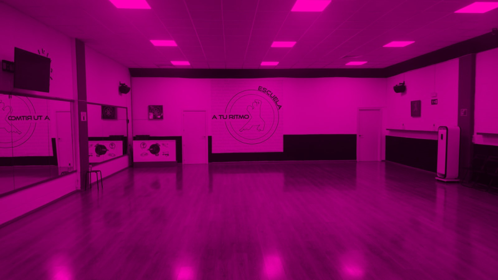
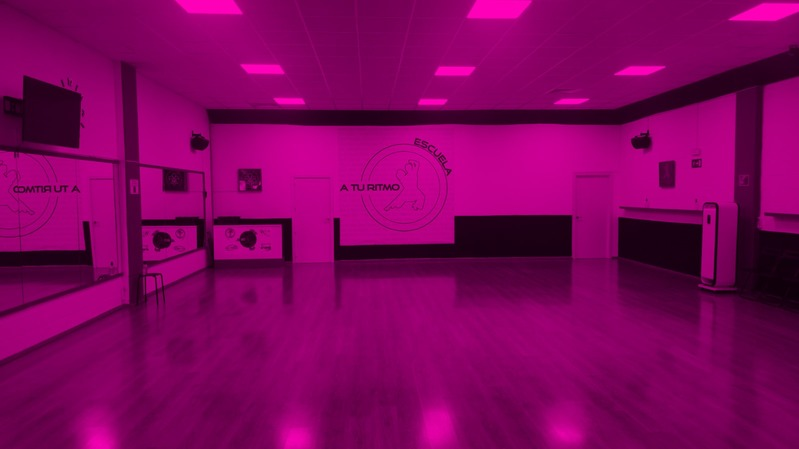
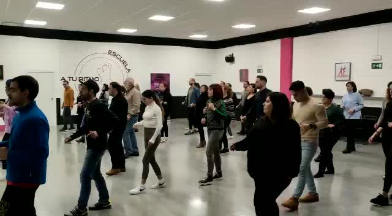

NUESTRA ESCUELA
A Tu Ritmo: una escuela para vivir el baile en Barakaldo.
Nos apasiona aprender, enseñar y compartir la música. Y creemos que el baile es mucho más que una secuencia de pasos.

En A Tu Ritmo
Lo que nos mueve
A Tu Ritmo reúne en Barakaldo disciplinas y profesionales con recorridos muy diferentes. Aprender sin perder la ilusión. Practicar con curiosidad. Escuchar la música de otra manera. Encontrar personas con quienes compartirla.
Conocer al profesoradoEL ESPACIO
Un lugar para encontrarnos y movernos.
La sala

Un espacio para compartir
Clases y comunidad